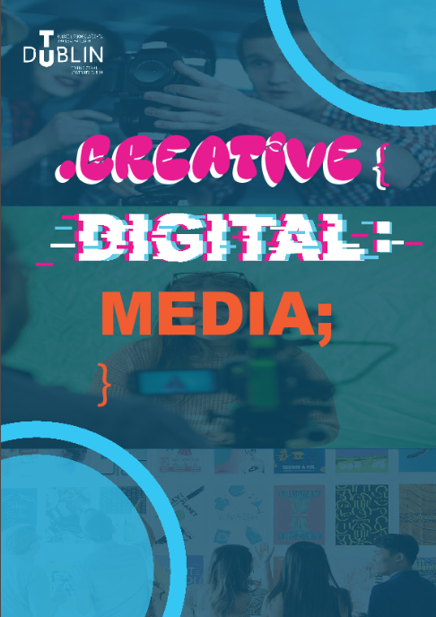
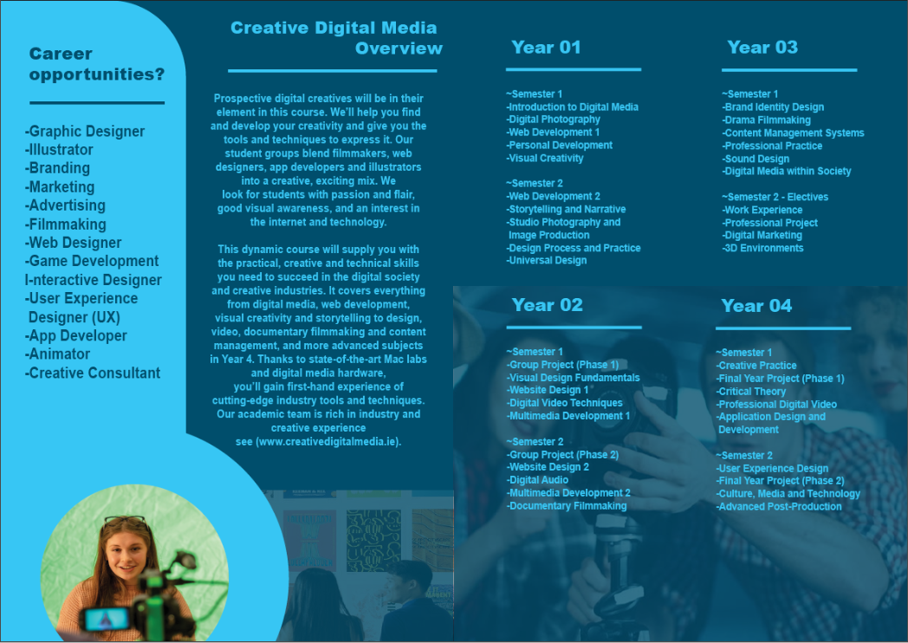
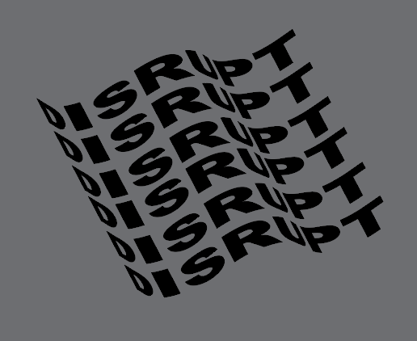
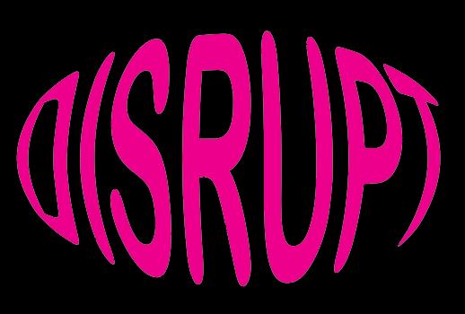
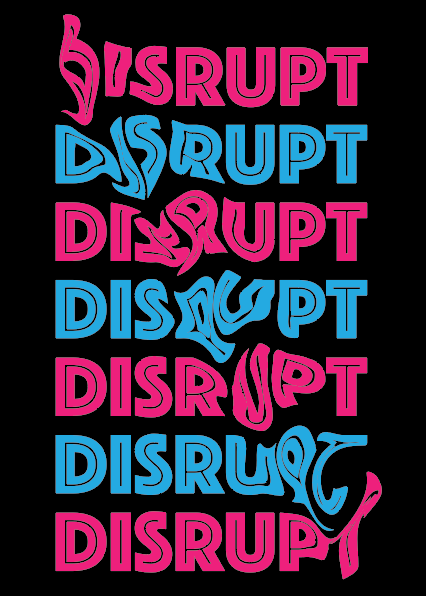
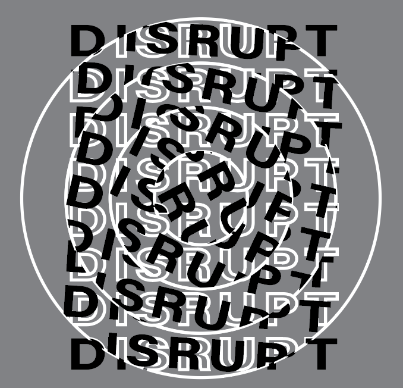
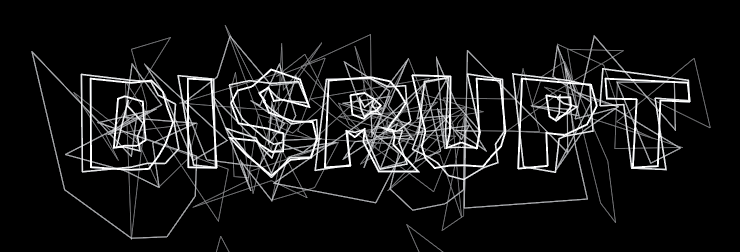
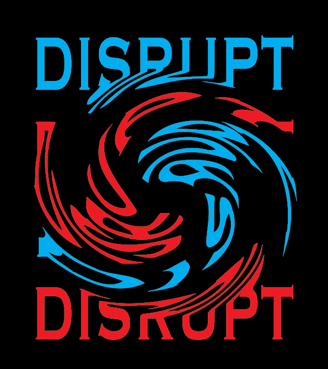

Illustrations & Print
A prototype brochure and illustrator designs.


I was tasked with making a brochure of the course Creative Digital Media at TUD. There is a front cover, two inside pages and a back cover. I achieved this using Adobe Illustrator and Adobe InDesign. Looking back, I would make some changes to my design and clean it up more as if it were for an actual client I would go through it with them based off their choices.






Here are a few different typography designs I made on Adobe Illustrator and a couple of shapes that show my experience using Adobe Illustrator. We were asked to use the word "Disrupt" and to actually disrupt different texts in whatever ways we could come up with. I really enjoyed this as it taught me a lot in Adobe Illustrator and more theory behind typography itself.
← Back home